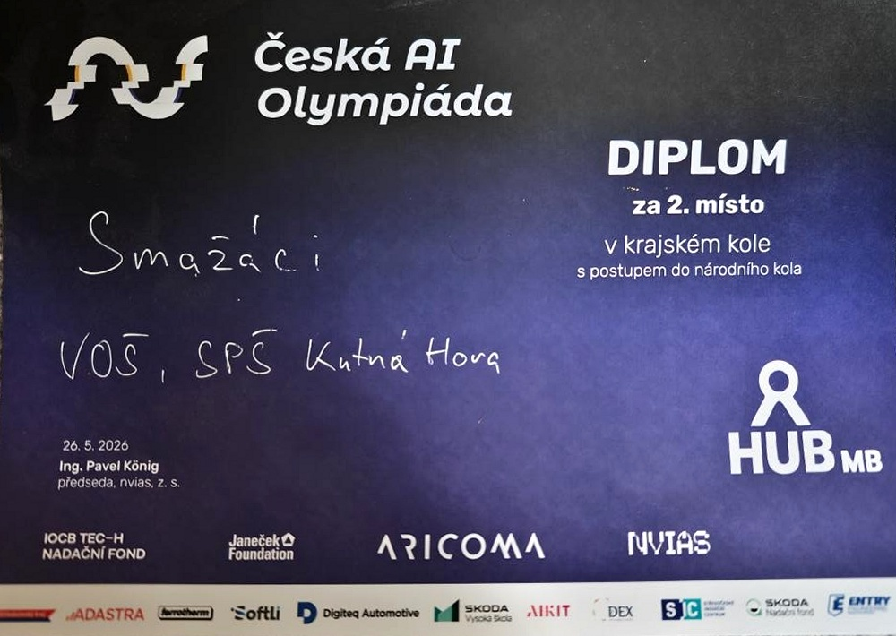

Šimon Tobiáš
Tvorba, modernizace webů & aplikací
Student IT na VOŠKH se zaměřením na čistý kód, spolehlivou architekturu, technické SEO a zabezpečení systémů.
Věnuji se úpravám a modernizaci existujících webů, vývoji aplikací a technické optimalizaci pro vyhledávače. Díky specializaci na kyberbezpečnost přistupuji ke každému řešení s důrazem na ochranu dat a prevenci zranitelností.
Co nabízím & v čem mohu pomoct
Přehled služeb zaměřených na funkční kód, moderní uživatelský zážitek, vyhledatelnost v klasických i AI vyhledávačích a spolehlivé zabezpečení.
Úprava a modernizace webů
Máte stávající web, který je pomalý, zastaralý nebo se špatně zobrazuje na mobilech? Pomohu vám ho přetvořit do moderní podoby bez nutnosti stavět vše od nuly.
- Zrychlení a odlehčení stránek: Rychlé načítání snižuje míru odchodu návštěvníků a zlepšuje dojem
- Plná responzivita: Bezchybné zobrazení a pohodlné ovládání na telefonech, tabletech i monitorech
- Redesign a oživení vzhledu: Moderní čistý design, úprava stylů a přehlednější typografie
- Oprava chyb a nefunkčních prvků: Zprovoznění formulářů, menu, odkazů a odstranění technických nedostatků
Tvorba webů a aplikací na míru
Vývoj nových webových prezentací a praktických aplikací navržených přesně podle potřeb vašeho podnikání či projektu.
- Webové prezentace: Rychlé, čisté a přehledné webové stránky bez zbytečného balastu a šablon
- Aplikace pro správu agend: Webové i desktopové nástroje pro evidenci zakázek, klientů a databází
- Automatizace rutinních procesů: Automatické generování dokumentů, soupisek, notifikací a exportů
- Napojení na služby a API: Propojení s datovými úložišti, cloudovými disky i e-mailovými servery
Optimalizace pro vyhledávače & AI
Vyhledávání se mění — kromě klasického Googlu dnes lidé hledají v AI odpovědích a jazykových modelech. Připravuji weby na všechny 3 klíčové vrstvy:
Technické SEO, čistá sémantika, rychlost a správné indexování, aby vás zákazníci našli v tradičních výsledcích.
Optimalizace pro přímé a generativní odpovědi AI, aby byl obsah vybrán a citován jako důvěryhodný zdroj.
Struktura a kontext obsahu přizpůsobené tak, aby modely přesně chápaly vaše služby a doporučovaly je uživatelům.
Zabezpečení a technická správa
Díky mému zaměření na kyberbezpečnost chráním vaše stránky a aplikace před útoky, výpadky i ztrátou citlivých informací.
- Bezpečnostní audit: Prověření webu a odhalení slabých míst, než jich zneužije útočník
- Ochrana proti běžným útokům: Zabezpečení formulářů a prevence zranitelností podle OWASP standardů
- Správné nastavení HTTPS & hlaviček: Konfigurace bezpečnostních parametrů prohlížeče a šifrování
- Pravidelné zálohování a dohled: Nastavení automatických záloh a technické podpory pro klidný spánek
Dokončené projekty
Výběr reálných projektů s odkazem na otevřené zdrojové kódy na mém GitHub profilu.
Ověřené dovednosti v praxi
Oficiální úspěch ze soutěže v algoritmech a profil z praktických kyberbezpečnostních simulací.
2. místo v krajském kole (s postupem do národního kola)
Ocenění za 2. místo v krajském kole České AI olympiády s přímým postupem do celostátního kola (tým Smažáci, VOŠ a SPŠ Kutná Hora). Zaměřeno na řešení komplexních algoritmických úloh, optimalizaci a praktické porozumění strojovému učení.

- 2. místo v krajském kole a postup do celostátního kola
- Reprezentace školy VOŠ a SPŠ Kutná Hora (tým Smažáci)
- Praktické řešení netriviálních algoritmických a logických úloh
TryHackMe — Profil Zeroczech
Aktivní řešení praktických laboratoří, penetračních testů a CTF (Capture The Flag) výzev na mezinárodní bezpečnostní platformě TryHackMe.
- Praktický výcvik v zabezpečení webových a serverových systémů
- Pochopení útočných vektorů pro stavbu odolnějších aplikací
- Práce se síťovými nástroji a analýza protokolů v reálném čase
Kontaktujte mě
Máte zájem o modernizaci webu, vývoj aplikace, konzultaci SEO nebo bezpečnostní audit? Rád se na váš projekt podívám.